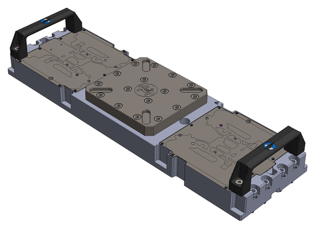
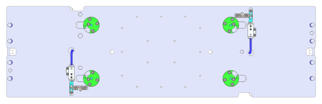

Bridge Beam Direct Probe for Digital and Mixed Signal (E8016BBD)
The bridge beam for digital and mixed signal (E8016BBD) has a structure without cutouts. Therefore, compared to the other bridge beams, the deflection under load is less than 50 %.
- certified tolerances, matching with Advantest made probe card stiffeners, for trouble free operation,
- cam lock interlock with probe cards eliminates realignment need after cleaning interval, and
- controlled and specified deflection characteristics for superior contacting robustness at very high probe counts.

Bottom view:

Availability
The E8016BBD bridge beam is available from Advantest.
Integration
The following graphic shows how the Direct-Probe™ bridge beam is integrated for overhead docking on a prober. The test head is docked from the top and connects to pogo pin areas on both sides of the bridge beam.

Improved probe card interlock
Advantest Direct-Probe™ bridge beams feature a new probe card interlock with superior XY repeatability after cleaning step.

|
This interlock improves the probe card alignment after probe head cleaning. During card clamp operation, the Direct-Probe™ bridge beam pushes and holds the probe card alignment pins to the reference point and restricts the XY card movement. |
As shown in the following graphics, the improved probe card alignment refers to guide pins 1 (top right) and 4 (bottom left) in the outer positions but guide pin 2 (bottom right) is also required.

Functional changes
- Introduced in SmarTest 7.5.3 / 8.3.0